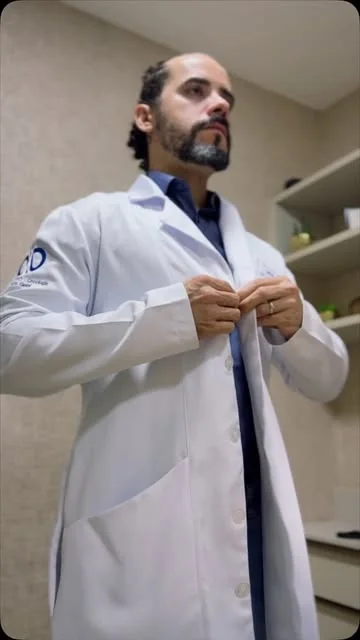
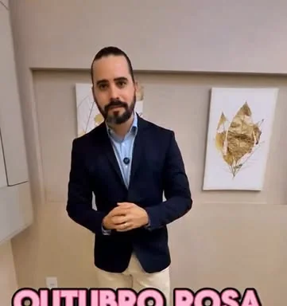

Consultas e prevenção
Cuidado regular com a saúde urológica.
Ver tratamentosUrologia geral, uro-oncologia e cirurgia robótica e laparoscópica em Macapá e São Paulo.
Especialista em Urologia pela SBU | Macapá, AP e São Paulo, SP

Cuidado regular com a saúde urológica.
Ver tratamentosTecnologia a favor da recuperação.
Ver tratamentos
O Dr. Fernando Lustosa é urologista, especialista pela SBU, com atuação em cirurgia robótica e laparoscópica, uro-oncologia e urologia geral, em Macapá e São Paulo.
Escolha um tema para ver para quem é indicado e como funciona.
Você chama no WhatsApp e escolhe o melhor horário.
Consulta para entender a sua queixa, o seu histórico e os seus objetivos.
Você recebe a indicação certa para o seu caso, com clareza sobre cada etapa.
Retornos e orientações para cuidar do resultado.
Se a sua dúvida não estiver aqui, é só perguntar pelo WhatsApp.
Pelo WhatsApp. A equipe confirma o horário e envia as orientações para o dia do atendimento.
Sim. É na avaliação que a indicação é definida, com segurança e de acordo com o seu caso.
Não. Cada organismo responde de um jeito, por isso o plano é individual e os retornos fazem parte do cuidado.
As condições são informadas pela equipe no momento do agendamento.
Agende a sua avaliação e tire as suas dúvidas diretamente com a equipe.